Illustrator
Vector graphics

THIS IS MY
A Peek Into My Work & Process
the human behind the work.
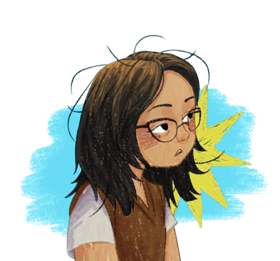
I enjoy turning ideas into visuals, experimenting with layouts, and making digital experiences feel thoughtful and fun.
My interests range from graphic design and illustration to UI design and web development. I'm still learning, still figuring things out, and always finding something new to get curious about.
I believe a little personality can make a big difference. Whether I'm making a poster or designing an interface, I want my work to communicate clearly while still feeling like me.
Let's connect! ↗Things I use to bring ideas to life, one layer at a time.
I use different tools depending on the project, from creating visual materials and illustrations to exploring layouts and interface designs.
I'm still developing my skills, especially in some of the more advanced features of Adobe Illustrator and Photoshop.
Vector graphics
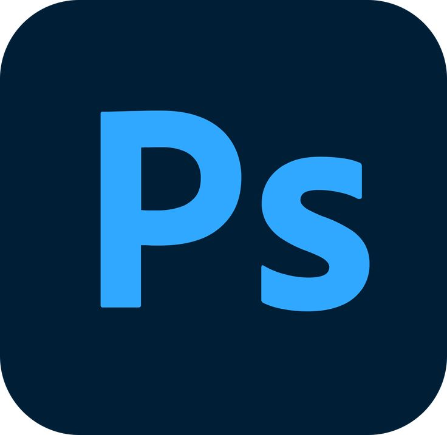
Image editing
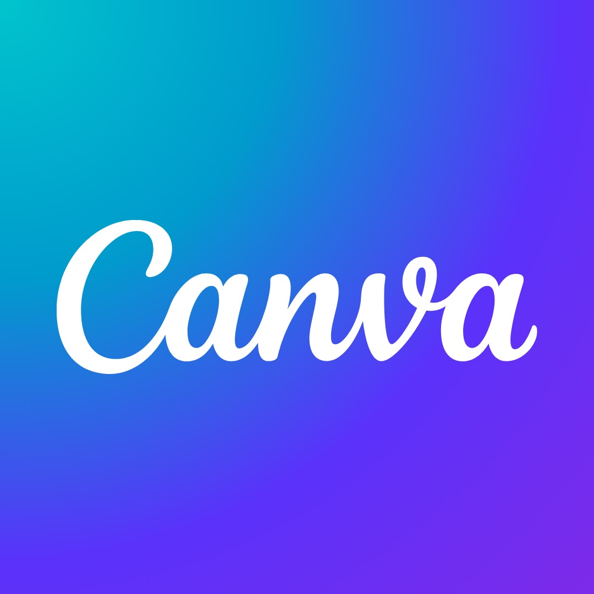
CaGraphic design
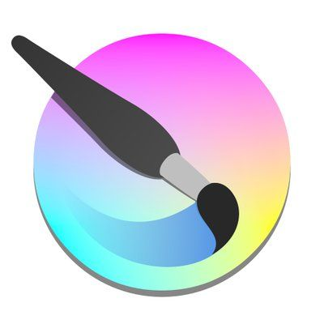
KrDigital painting
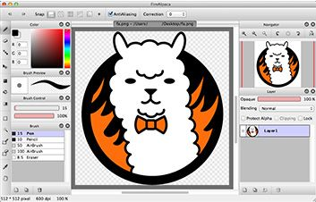
FADigital illustration
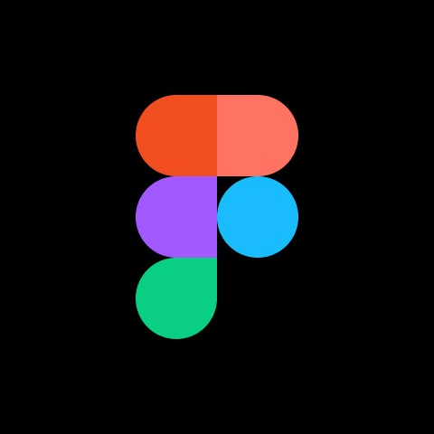
FiUI design & prototyping
Posters, pubmats, illustrations, and other little pieces of creativity.
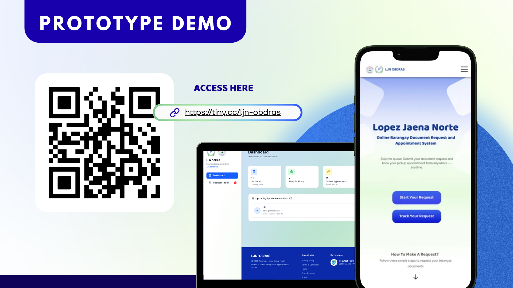
A visual prototype and layout exploration designed for the LJN Obdras web project, focusing on clear structure and functional visual hierarchy.
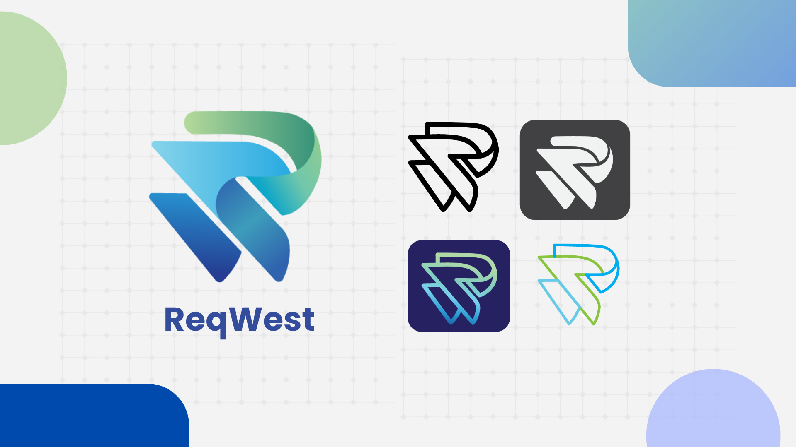
A group branding and logo design project created for ReqWest, establishing a distinct visual identity, color scheme, and mark.
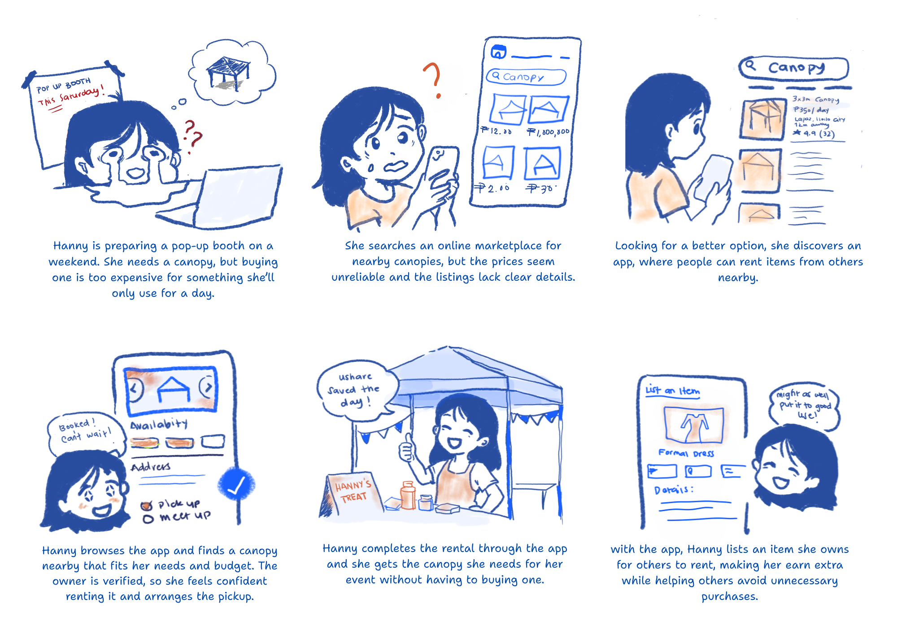
A storyboard narrative illustrating key user interactions and scenarios for a rental application concept.
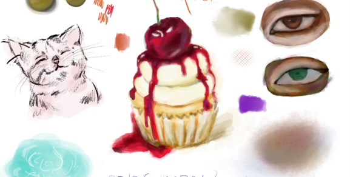
Loose digital sketches and creative visual experiments created using Krita to test brushes, colors, and concepts.
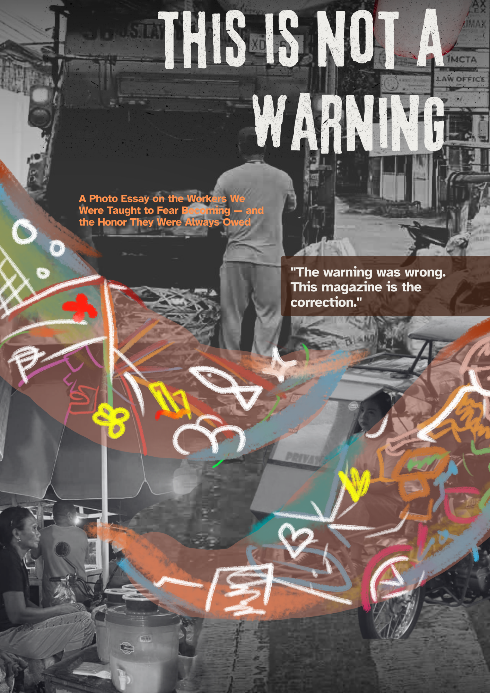
A photo essay magazine cover focusing on the stories, daily lives, and honor of street workers in Iloilo City.
social media posting material and layout.
A collection of web projects, experiments, and things I'm learning to build.
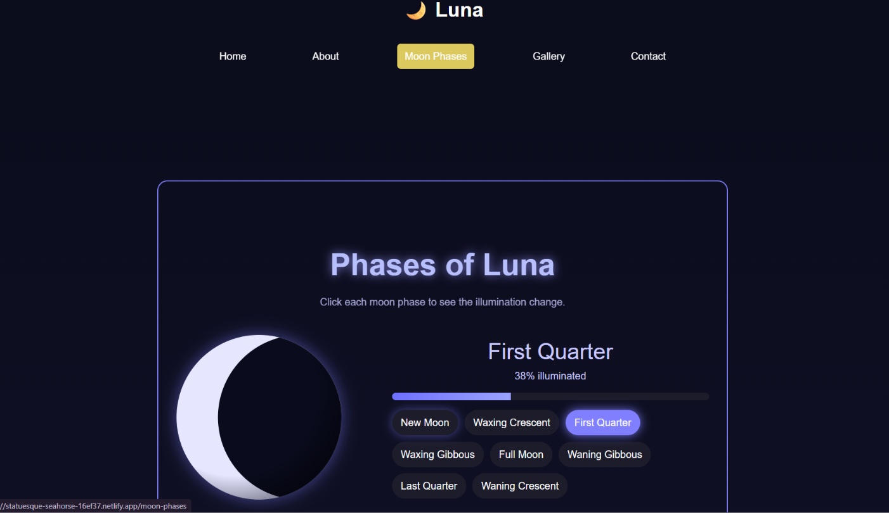
An interactive web application exploring the phases of the moon alongside celestial myths, folklore stories, and an integrated lunar calendar.
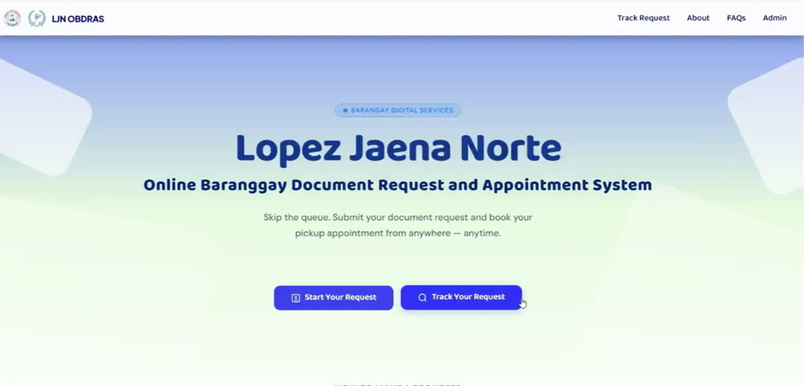
↗An online barangay document request system developed for Barangay Lopez Jaena Norte to streamline local requests and administrative processes.
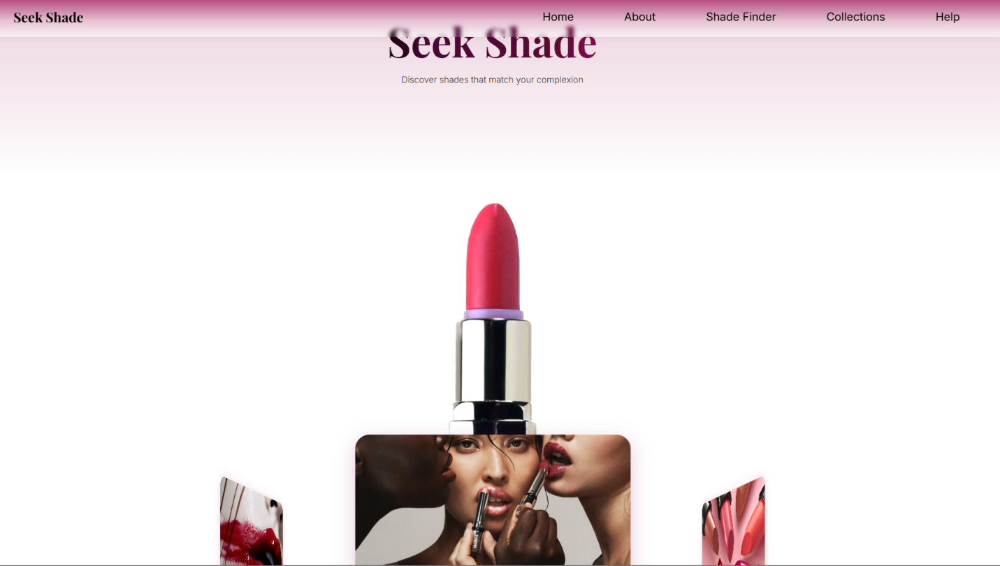
↗A lipstick shade finder. Add details about its features and intended users.
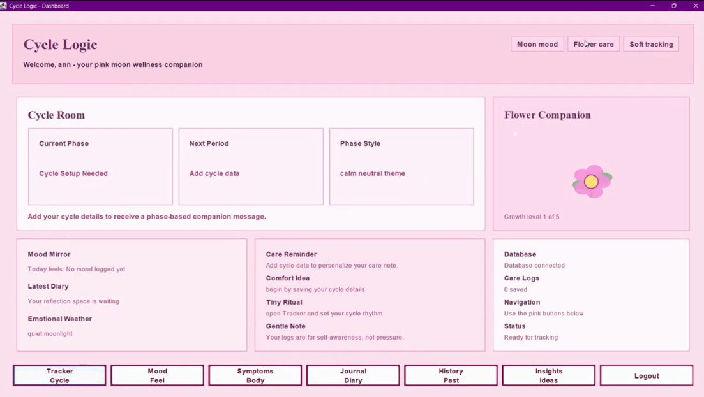
↗A Java-based application built in NetBeans designed to track menstrual cycles, notes, and daily mood logs in a fun and interactive way.
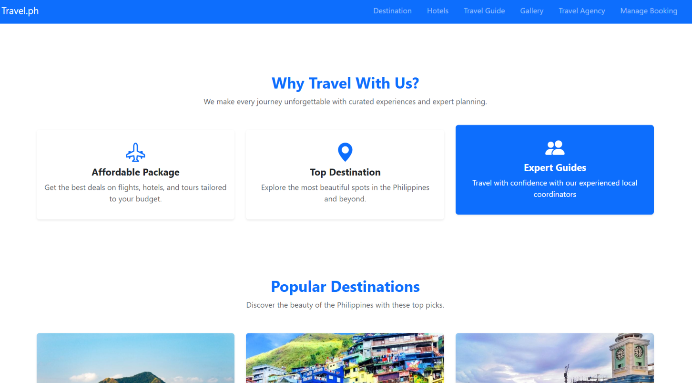
↗A travel website built with Bootstrap. Add the features and design choices you made.
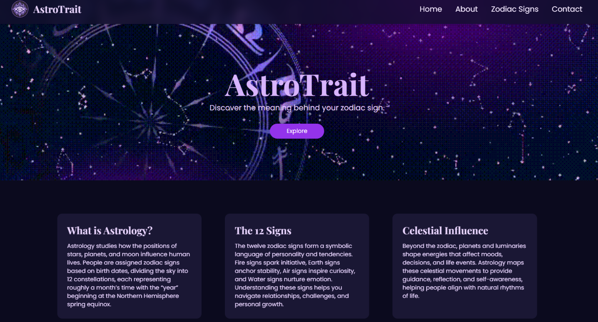
↗A sleek, responsive static website built with Tailwind CSS to explore personality traits and details for each zodiac sign.
Most of the builds featured here are a mix of academic projects, hands-on classroom assignments, and personal practice builds. Many of them are evolving works-in-progress as I continue to experiment with new technologies and refine user interfaces.
Inspiration, references, little notes, and lots of curiosity.
Sketch, experiment, rearrange, and figure out what works.
Refine the details, learn from mistakes, and share the result.
I'm always happy to connect with fellow creatives, exchange ideas, and learn about interesting projects.
Send me a message ↗